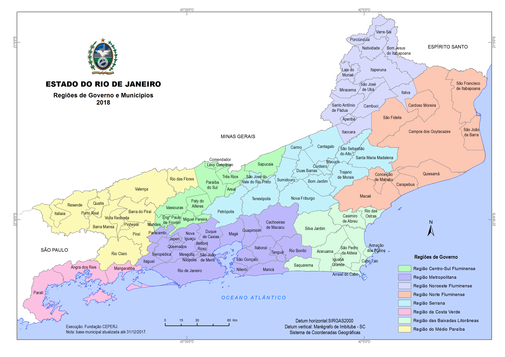

O estado do Rio de Janeiro é uma das unidades federativas mais importantes do Brasil em termos econômicos. Sua economia é bastante diversificada, com destaque para os setores de petróleo e gás, indústria naval, siderúrgica, metalúrgica e serviços. A presença de grandes empresas como Petrobras e Shell contribui para que o estado seja responsável por uma significativa parcela da produção nacional de combustíveis. Além disso, o turismo desempenha um papel fundamental, com milhões de visitantes atraídos anualmente por pontos famosos como o Cristo Redentor, o Pão de Açúcar e as praias de Copacabana e Ipanema.

Entre as principais cidades do estado está a capital, Rio de Janeiro, que é o maior centro econômico, cultural e turístico da região. Outras cidades importantes incluem Niterói, conhecida pela alta qualidade de vida e infraestrutura urbana; São Gonçalo, a segunda cidade mais populosa do estado; Duque de Caxias, com forte presença industrial; e Petrópolis, localizada na região serrana, famosa por seu valor histórico e turístico. Também merecem destaque Campos dos Goytacazes, relevante na produção de petróleo e na agroindústria, e Resende, com indústrias automotiva e militar.
O atual governador do estado é Cláudio Castro, do partido PL (Partido Liberal). Ele assumiu o cargo em 2021, após o afastamento de Wilson Witzel, e foi eleito oficialmente em 2022, com mais de 58% dos votos válidos no segundo turno. Sua gestão tem sido marcada por políticas voltadas à segurança pública, obras de infraestrutura e investimentos no setor de saúde. Cláudio Castro tem buscado reforçar parcerias com o governo federal e ampliar a capacidade de investimento do estado, especialmente após um período de crise fiscal prolongada.
A população do estado do Rio de Janeiro é estimada em cerca de 17,2 milhões de habitantes (dados de 2024), sendo o terceiro estado mais populoso do Brasil. A cidade do Rio de Janeiro concentra mais de 6,7 milhões de pessoas e continua sendo um importante polo populacional. O estado apresenta elevada urbanização, com mais de 95% dos habitantes vivendo em áreas urbanas. A Região Metropolitana do Rio de Janeiro é responsável por boa parte da população total e reúne diversas cidades interligadas por infraestrutura e dinâmica econômica compartilhada.
elaborado por leonardo